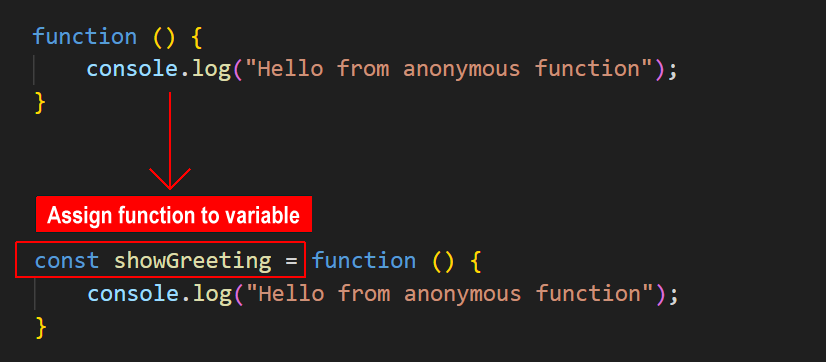
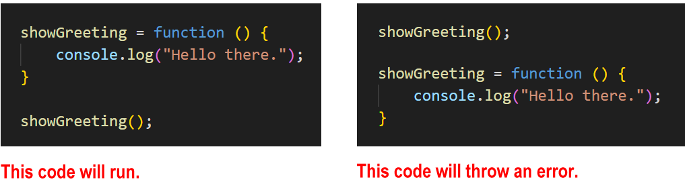

Learning Goals
At the end of this Tutorial, you will be able to:
- Create an anonymous function expression whose value is stored in a variable.
- Work with parameters, arguments and return values in anonymous functions.
- Add default input values to anonymous functions.
- Recognise that anonymous functions are not hoisted.
- Immediately invoke an anonymous function without calling it.
Continue using the functions.html workfile you downloaded in the Function Declarations Tutorial.
About anonymous functions
Unlike a function declaration, an anonymous function is a function without a name.

But if it has no name, how can an anonymous function be called in a program?
One option is to assign the anonymous function to variable declared with the const keyword.
You can then call the anonymous function in a similar way to how you call a function declaration. See below.

Using the const variable type ensures the function is not accidentally changed or overwritten elsewhere in the program.
(Strictly speaking, an anonymous function is not stored inside a JavaScript variable. Only the output that the function returns is stored in the variable.)
Anonymous functions are also called function expressions.
Copy the following sample anonymous function to your functions.html workfile and verify it runs correctly.
// ======== ANONYMOUS FUNCTIONS ========
// Anonymous function
const showGreeting = function () {
console.log('Hello from anonymous function');
}
showGreeting(); // Outputs 'Hello from anonymous function' to Console
Parameters, arguments, and return values
As with function declarations, an anonymous function can contain parameters that you can pass values to as arguments. And an anonymous function can return a value back to the program that called it.
Copy these two anonymous functions to your functions.html workfile and verify they run correctly.
// Anonymous function with two parameters that returns a value
const sumNumbers = function(a, b) {
return a + b;
};
// Call the function with two arguments
let resultSum = sumNumbers(5, 3);
// Outputs result to Console
console.log(`Returned result: ${resultSum}`);
// Anonymous function with two parameters that returns a value
const multiplyNumbers = function(x, y) {
return x * y;
};
// Call the function with two arguments
let resultMultiply = multiplyNumbers(5, 3);
// Outputs result to Console
console.log(`Returned result: ${resultMultiply}`);Anonymous functions are not hoisted
One important difference between a function declaration and an anonymous function is that the first is hoisted while the second is not hoisted.
As a result, you can call an anonumous function only after you have created it – and never before.
Immediately-invoked anonymous functions
You can amend the syntax of an anonymous function so that it is run without being called from elsewhere in the program. Such a function is said to be immediately-invoked.
Note that function declarations cannot be immediately-invoked. Only an anonymous function can.
To invoke an anonymous function immediately, add a parenthesis () at the end of the function, just before the semi-colon.
Copy this anonymous function to your functions.html workfile and verify it runs without being called.
const runImmediately = function() {
console.log("Hello from immediately-invoked anonymous function");
}();